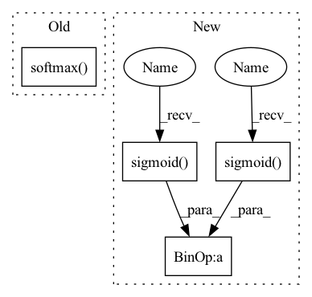

Pattern ID :2346
Before Change
// Update the window
self.win_idx = torch.argmax(alignment,1).long()[0].item()
// Normalize context weight
alignment = F.softmax( alignment, dim=-1)
// alignment = 5 * alignment
// alignment = torch.sigmoid(alignment) / torch.sigmoid(alignment).sum(dim=1).unsqueeze(1)
// Attention context vector
// (batch, 1, dim)After Change
// Normalize context weight
// alignment = F.softmax(alignment, dim=-1)
// alignment = 5 * alignment
alignment = torch.sigmoid( alignment) / torch.sigmoid( alignment) .sum(dim=1).unsqueeze(1)
// Attention context vector
// (batch, 1, dim)
// c_i = \sum_{j=1}^{T_x} \alpha_{ij} h_jIn pattern: SUPERPATTERN
Frequency: 3
Non-data size: 4
Instances Fragment ID: 14431289
Project Name: coqui-ai/tts
Commit Name: 4431e04b482238eee5d581eb2c9ca6789ac0ff12
Time: 2019-01-16
Author: egolge@mozilla.com
File Name: layers/attention.py
M Class Name: AttentionRNNCell
N Class Name: AttentionRNNCell
M Method Name: forward(8)
N Method Name: forward(8)
M Parent Class: nn.Module
N Parent Class: nn.Module
M File Name: layers/attention.py
N File Name: layers/attention.py
M Start Line: 171
M End Line: 173
N Start Line: 171
N End Line: 175
Before Change
mask = mask.view(memory.size(0), -1)
alignment.masked_fill_(1 - mask, -float("inf"))
// Normalize context weight
alignment = F.softmax( alignment, dim=-1)
// Attention context vector
// (batch, 1, dim)
// c_i = \sum_{j=1}^{T_x} \alpha_{ij} h_j
context = torch.bmm(alignment.unsqueeze(1), annots)After Change
alignment.masked_fill_(1 - mask, -float("inf"))
// Normalize context weight
// alignment = F.softmax(alignment, dim=-1)
alignment = torch.sigmoid( alignment) / torch.sigmoid( alignment) .sum(dim=1).unsqueeze(1)
// Attention context vector
// (batch, 1, dim)
// c_i = \sum_{j=1}^{T_x} \alpha_{ij} h_j Fragment ID: 14431285
Project Name: coqui-ai/tts
Commit Name: f2ef1ca36afd4eb74bd1ad36a7a84411f69e5435
Time: 2018-09-19
Author: erengolge@gmail.com
File Name: layers/attention.py
M Class Name: AttentionRNNCell
N Class Name: AttentionRNNCell
M Method Name: forward(7)
N Method Name: forward(7)
M Parent Class: nn.Module
N Parent Class: nn.Module
M File Name: layers/attention.py
N File Name: layers/attention.py
M Start Line: 134
M End Line: 134
N Start Line: 135
N End Line: 135
Before Change
positives = logits_scores.diag().view(-1, 1).expand_as(logits_scores)
diff = positives - logits_scores
loss = F.sigmoid(diff)
logit_softmax = torch.softmax( logits_scores, dim = 1)
loss = logit_softmax * loss
reg = logit_softmax * (logits_scores**2)
// set to zeros the diff scores of positive targets present in the same session
loss = loss.masked_fill(positive_mask, 0)After Change
positive_mask = ~negative_mask
positives = logits_scores.diag().view(-1, 1).expand_as(logits_scores)
diff = positives - logits_scores
penalization = torch.sigmoid( logits_scores ** 2)
loss = torch.sigmoid( -diff) + penalization
// set to zeros the difference scores of positive targets of the same session
loss = loss.masked_fill(positive_mask, 0)
// Average over the nb of negative sample per Fragment ID: 14431280
Project Name: nvidia-merlin/transformers4rec
Commit Name: 58b4bf9dfdc2fe5ce6c90ac57f4db71224268942
Time: 2021-02-19
Author: gmoreira@nvidia.com
File Name: codes/loss_functions.py
M Class Name: NewBPR_max_reg
N Class Name: TOP1
M Method Name: forward(3)
N Method Name: forward(3)
M Parent Class: nn.Module
N Parent Class: nn.Module
M File Name: codes/loss_functions.py
N File Name: codes/loss_functions.py
M Start Line: 188
M End Line: 199
N Start Line: 102
N End Line: 108
Before Change
// Update the window
self.win_idx = torch.argmax(alignment,1).long()[0].item()
// Normalize context weight
alignment = F.softmax( alignment, dim=-1)
// alignment = 5 * alignment
// alignment = torch.sigmoid(alignment) / torch.sigmoid(alignment).sum(dim=1).unsqueeze(1)
// Attention context vector
// (batch, 1, dim)After Change
// Normalize context weight
// alignment = F.softmax(alignment, dim=-1)
// alignment = 5 * alignment
alignment = torch.sigmoid( alignment) / torch.sigmoid( alignment) .sum(dim=1).unsqueeze(1)
// Attention context vector
// (batch, 1, dim)
// c_i = \sum_{j=1}^{T_x} \alpha_{ij} h_j Fragment ID: 14431283
Project Name: coqui-ai/tts
Commit Name: 4431e04b482238eee5d581eb2c9ca6789ac0ff12
Time: 2019-01-16
Author: egolge@mozilla.com
File Name: layers/attention.py
M Class Name: AttentionRNNCell
N Class Name: AttentionRNNCell
M Method Name: forward(8)
N Method Name: forward(8)
M Parent Class: nn.Module
N Parent Class: nn.Module
M File Name: layers/attention.py
N File Name: layers/attention.py
M Start Line: 171
M End Line: 173
N Start Line: 171
N End Line: 175